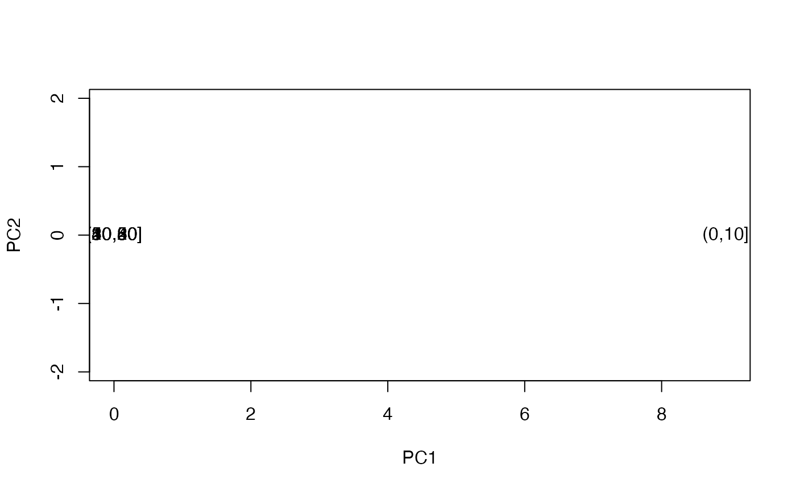

R/zzz-step-vpd-betti-curve.R
step_vpd_betti_curve.RdThe function step_vpd_betti_curve() creates
a specification of a recipe step that will convert
a list-column of 3-column matrices of persistence data
to a list-column of 1-row matrices of vectorizations.
step_vpd_betti_curve(
recipe,
...,
role = "predictor",
trained = FALSE,
hom_degree = 0L,
xseq = NULL,
xmin = NULL,
xmax = NULL,
xlen = NULL,
xby = NULL,
evaluate = "intervals",
columns = NULL,
keep_original_cols = TRUE,
skip = FALSE,
id = rand_id("vpd_betti_curve")
)A recipe object. The step will be added to the sequence of operations for this recipe.
One or more selector functions to choose variables for this step.
See selections() for more details.
For model terms created by this step, what analysis role should they be assigned? By default, the new columns created by this step from the original variables will be used as predictors in a model.
A logical to indicate if the quantities for preprocessing have been estimated.
The homological degree of the features to be transformed.
A discretization grid, as an increasing numeric vector.
xseq overrides the other x* parameters with a warning.
Limits and resolution of a discretization grid;
specify only one of xlen and xby.
The method by which to vectorize continuous functions over a grid, either 'intervals' or 'points'. Some functions only admit one method.
A character string of the selected variable names. This field
is a placeholder and will be populated once prep() is used.
A logical to keep the original variables in the
output. Defaults to FALSE.
A logical. Should the step be skipped when the recipe is baked by
bake()? While all operations are baked when prep() is run, some
operations may not be able to be conducted on new data (e.g. processing the
outcome variable(s)). Care should be taken when using skip = TRUE as it
may affect the computations for subsequent operations.
A character string that is unique to this step to identify it.
An updated version of recipe with the new step added to the
sequence of any existing operations.
Persistent homology is usually encoded as birth–death pairs (barcodes or diagrams), but the space of persistence data sets does not satisfy convenient statistical properties. Such applications as hypothesis testing and machine learning benefit from transformations of persistence data, often to Hilbert spaces (vector spaces with inner products and induced metrics).
The Betti curve vectorization deploys
TDAvec::computeBettiCurve().
See there for definitions and references.
This step has 1 tuning parameter:
hom_degree: Homological degree (type: integer, default: 0L)
library(recipes)
# inspect vectorized features
volc_dat <- data.frame(image = I(list(volcano / 10)))
recipe(~ image, data = volc_dat) %>%
step_pd_raster(image, method = "link_join") %>%
step_vpd_betti_curve(image_pd, hom_degree = 1) %>%
print() -> volc_rec
#>
#> ── Recipe ──────────────────────────────────────────────────────────────────────
#>
#> ── Inputs
#> Number of variables by role
#> predictor: 1
#>
#> ── Operations
#> • persistent features from a cubical filtration of: image
#> • Betti curve of: image_pd
print(volc_rec)
#>
#> ── Recipe ──────────────────────────────────────────────────────────────────────
#>
#> ── Inputs
#> Number of variables by role
#> predictor: 1
#>
#> ── Operations
#> • persistent features from a cubical filtration of: image
#> • Betti curve of: image_pd
volc_rec %>%
prep(training = volc_dat) %>%
bake(new_data = volc_dat)
#> # A tibble: 1 × 101
#> image image_pd image_pd_bc_1 image_pd_bc_2 image_pd_bc_3 image_pd_bc_4
#> <list> <list> <dbl> <dbl> <dbl> <dbl>
#> 1 <dbl[…]> <PHom> 0 0 0 0
#> # ℹ 95 more variables: image_pd_bc_5 <dbl>, image_pd_bc_6 <dbl>,
#> # image_pd_bc_7 <dbl>, image_pd_bc_8 <dbl>, image_pd_bc_9 <dbl>,
#> # image_pd_bc_10 <dbl>, image_pd_bc_11 <dbl>, image_pd_bc_12 <dbl>,
#> # image_pd_bc_13 <dbl>, image_pd_bc_14 <dbl>, image_pd_bc_15 <dbl>,
#> # image_pd_bc_16 <dbl>, image_pd_bc_17 <dbl>, image_pd_bc_18 <dbl>,
#> # image_pd_bc_19 <dbl>, image_pd_bc_20 <dbl>, image_pd_bc_21 <dbl>,
#> # image_pd_bc_22 <dbl>, image_pd_bc_23 <dbl>, image_pd_bc_24 <dbl>, …
# dimension-reduce using vectorized features
data(permeability_qsar, package = "modeldata")
permeability_qsar %>%
transform(perm_cut = cut(permeability, breaks = seq(0, 60, 10))) %>%
subset(select = -permeability) %>%
tidyr::nest(chem_fp = -perm_cut) %>%
print() -> perm_dat
#> # A tibble: 6 × 2
#> perm_cut chem_fp
#> <fct> <list>
#> 1 (10,20] <tibble [20 × 1,107]>
#> 2 (0,10] <tibble [110 × 1,107]>
#> 3 (20,30] <tibble [7 × 1,107]>
#> 4 (30,40] <tibble [8 × 1,107]>
#> 5 (40,50] <tibble [16 × 1,107]>
#> 6 (50,60] <tibble [4 × 1,107]>
recipe(perm_cut ~ chem_fp, data = perm_dat) %>%
step_pd_point_cloud(chem_fp, max_hom_degree = 2) %>%
step_vpd_betti_curve(chem_fp_pd, hom_degree = 1) %>%
step_pca(starts_with("chem_fp_pd_"), num_comp = 2) %>%
print() -> perm_rec
#>
#> ── Recipe ──────────────────────────────────────────────────────────────────────
#>
#> ── Inputs
#> Number of variables by role
#> outcome: 1
#> predictor: 1
#>
#> ── Operations
#> • persistent features from a Rips filtration of: chem_fp
#> • Betti curve of: chem_fp_pd
#> • PCA extraction with: starts_with("chem_fp_pd_")
perm_est <- prep(perm_rec, training = perm_dat)
perm_res <- bake(perm_est, new_data = perm_dat)
# inspect results
tidy(perm_rec)
#> # A tibble: 3 × 6
#> number operation type trained skip id
#> <int> <chr> <chr> <lgl> <lgl> <chr>
#> 1 1 step pd_point_cloud FALSE FALSE pd_point_cloud_fiyJF
#> 2 2 step vpd_betti_curve FALSE FALSE vpd_betti_curve_dRDOf
#> 3 3 step pca FALSE FALSE pca_do44I
tidy(perm_rec, number = 2)
#> # A tibble: 1 × 3
#> terms value id
#> <chr> <dbl> <chr>
#> 1 chem_fp_pd NA vpd_betti_curve_dRDOf
tidy(perm_est, number = 2)
#> # A tibble: 1 × 3
#> terms value id
#> <chr> <dbl> <chr>
#> 1 chem_fp_pd NA vpd_betti_curve_dRDOf
# visualize results
with(perm_res, {
plot(PC1, PC2, type = "n", asp = 1)
text(PC1, PC2, labels = perm_cut)
})
